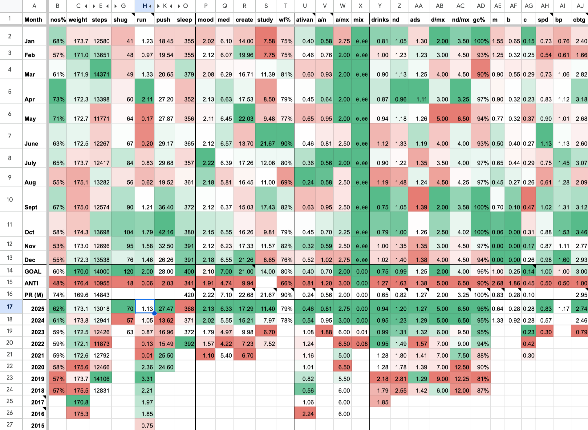

Everyday Systems: Podcast : Episode 101
State of the Systems 2025
Hello! Welcome to the 2025 State of the Systems, in which I give my annual overview of how all the various Everyday Systems are doing, both in terms of my thinking about them and my personal practice. This is the 7th time I’ve done this now.
In my first State of the Systems, in 2016, I reported on 12 systems.
Now there are many more. How many, exactly? I thought this time I’d try to give a precise tally.
Staring at that table of contents spreadsheet for the Everyday Systems Compendium, which I’ve been puttering around on for over a year now, I count 33 total systems. 7 body systems, 14 soul systems, 2 spirits systems, and 10 meta systems.
It’s a little ambiguous, because, you know, what counts as a full, standalone system vs. a component system or a design pattern, but still, even approximately, that is a lot of systems. It’s almost embarrassing.
And far too many to talk through in one episode. Which I guess I haven’t really done in recent years anyway, but having quantified it now with such daunting precision, I hereby officially renounce any attempt to do so. Instead, I’ll focus just on the systems that have been most important to me in the last year: what’s new, what’s changed, what’s worked particularly well for me, what hasn’t maybe, what surprised me and what I need to do better on.
You may also be wondering, how can a person really be practicing 33 systems (and counting)? That seems exhausting if not impossible. And maybe even, not a good idea, like, a little OCD. I have some thoughts on that. Too many to squeeze into this already overpacked episode, but definitely on the docket to discuss in 2026.
At the end of this episode I’ll talk very briefly about what else I’ve got in the pipeline for the coming year in terms of the creative and productive aspect of Everyday Systems: what I’m thinking for new podcast episodes, how I’m doing on my project of compiling an Everyday Systems compendium ebook, and my slow but believe it or not actually happening revamp of the websites.
And maybe, once I get this episode out, to give a more comprehensive review, I’ll finally release that systems table, as I discussed doing in my last state of the systems, with columns for categories, microdescriptions, links to podcast episodes and web pages, dates of origin and first publication, as a tool for people coming to the site to get a better handle on all the systems, sort of an expanded and updated version of the problem index I’ve had on the Everyday Systems web page since the beginning.
We still have a fair amount to cover this episode, even if it's not all 33 systems, so let’s dive in.
I’ll start with the lifelog, my spreadsheet for tracking my compliance with all my systems, along with other personal metrics and microjournal entries. If you take a look at the transcript page, you’ll see (or should see) a screenshot of my lifelog summary tab, which gives you a snapshot of my compliance with most of the body, soul and spirits system I’m practicing and, directly or indirectly, involves just about every meta system. It gives both monthly summaries for these habits for 2025, and also yearly summaries from 2016 for some columns, depending on when I started tracking them. It’s conditionally formatted in a “color range” so that better numbers are greener, worse numbers are redder, middling numbers are white. You’ll see that 2025 was a good year. Almost everything was at least as green or slightly greener in 2025 than in 2024, and in most columns you’ll see a nice multiyear gradient of increasing greenishness, showing sustained improvement, especially recent years. The exception is sleep, which I’ll come back to in a minute.
For the No S Diet, I got my highest compliance score ever: 62% green days. I think I reported the same number last year, but I must have been working with numbers not quite through the end of December, because there were a bunch of S days in there, and looking at the 2024 numbers now, I see only got 61% after the dust settled. Occupational hazard I guess of doing these “wrapped” episodes before the year is quite over. This year I’m not jumping the gun even a little. I’m recording this on the last day of the year and staring as I speak at my fully filled in 2025 Lifelog (sorry, I actually was staring at it. Where was I?). So I am pleased to be able to report an actual 62%, with today, new year’s eve, already accounted for as an S-day so I can’t possibly screw it up.
I’m not sure this level of compliance is even necessary. My average weight wasn’t really any different back in 2018 and 2019 when I was at a mere 57%. But it makes me happy to see it because it shows I’m taking it seriously, not slacking off, not getting complacent. And who knows, maybe it has compensated for the proverbial middle aged metabolism slowdown, and maybe I would have gained weight if it hadn’t been for this little uptick in compliance.
It also shows how motivationally powerful greenishness is, using color to assess and motivate behavior, because there is no way I’d have made this kind of continuing improvement without the desire to see that extra green in the lifelog. I didn’t set any formal goals. I didn’t promise myself any rewards. Green is its own reward, apparently. I didn’t even make any conscious decision to be better about No-S. I just applied conditional formatting to a column in a spreadsheet. Kind of incredible – how childish our motivations are (my motivations, at least) and how powerful simple self-manipulation tricks like this can be.
One thing I’ve noticed in previous years that struck me again this year, is that there is a definite seasonality to my weight, and it’s not what I would naively expect. I gain about 5 pounds in late summer, then lose them again over the Fall and Winter. Then late winter through early summer I’m stable. Then the cycle starts over. The gain makes sense: all those summer vacation S-days. But losing weight over the winter holidays feels a bit counter intuitive. My green day percentage is about as bad in November-December as it is in August. Maybe it’s all that shivering in the cold? No idea. But it’s striking. And one of those things I would never have noticed if I hadn’t been tracking like this. Stepping on the scale and seeing those heavier numbers pop up might have really freaked me out without that larger context.
Urban ranger, tracked here using step count as a proxy, ticked slightly upward for the 3rd year in a row. In 2020, as you may recall, my step count took a big hit because I was suddenly unable to run due to an injury. It’s taken me years to Zeno’s Paradox myself back to the point where I can run at all, and I’m still far from what I used to be able to do. But this year I got just about 13,000 daily steps on average, which is not bad at all for mostly mere walking, just 1000 steps shy of what I got in 2020 when I could still run non-pathetic distances, and I’m happy with it. Again, greenishness provides a gentle but real incentive.
Shovelglove I measure in a funny way. I’ve only been measuring it at all since my bad “uppy arm" in 2023. Prior to that, I’d been cruising at the same level for so many years that tracking felt unnecessary.
My new metric is something I call Shovelglove Power. It’s essentially a way to calculate my total "work" by multiplying the hammer weight by the reps per set, then averaging that over the seven days of the week.
So, if I do two sets of seven reps of all the moves with a 12-pound hammer, three times a week, that averages out to a "Power Score" of 72.
Back in my prime, I was doing two sets with a 20-pound hammer five times a week, which works out to a score of 200. I’ll admit, the math is a little crude—it doesn’t perfectly capture sessions where I might mix hammer weights or skip a specific movement—but it gives me a more or less good enough consistent "apples-to-apples" comparison over time, because usually I don’t do that.
And I have finally started adding back all the movements I’d previously removed when I was worried about my golfer’s elbow. After plenty of experimentation, it seems they’re actually fine now that I’ve sufficiently healed. So the Shovelglove power metric works again, apples to apples, without any major caveats.
My average shovelglove power score for this year, according to this system, was 70, over 10 points better than last year, but maybe a third of what I’m retrospectively projecting I would have gotten at my prime. I’m OK with that. I’ve been making slow progress three years running and if I can push it up a few points in 2026 and avoid injuries, I will be happy. I’m using mostly the 16 pound hammer at the moment rather than the 20 pounder. And if that’s where I max out at this point in my life, I’m OK with it. I’m grateful for whatever I can do. I’m 52 now, and my hope is that I’ll still be shovelgloving into my 80s. If, God willing, I’m able to do that, I know I’ll have to reconcile myself to further potentially ego-bruising downgrades.
Hardcore moderation means restraint. And restraint is hard—not least because to the outside observer (or to the evil, asshole voice in my head), it can look like laziness or a lack of ambition. I sometimes feel a twinge of embarrassment about that, so I try to explicitly notice the "hardness of seeming easy" and give myself credit for the discipline it actually requires.
The only body metric I haven’t been making progress on is sleep. According to my fitbit, I’ve been getting slightly less (or slightly fewer) average minutes of sleep for the last few years, and I believe it, given how much I try to cram into my waking hours. Little picture, for any given day, I’m not sure how accurate this thing is, but big picture, for averages over long periods of time, I think it provides some meaningful signal, and in any case, it’s a good nudge to do something I’m sure is good for me. I think some of the reason my sleep numbers have gone down over the last few years is that the fitbit algorithm has gotten better. A few years ago it would often think I was asleep when I was lying in bed watching TV. It’s gotten better about that. The sleep and wake times at least now usually look right. I know that I don’t get quite enough sleep and I think the fitbit is now accurate enough to be useful in getting a sense of this and monitoring the effectiveness of my various countermeasures.
Chief among my countermeasures is the Spider Hunter Sleep Expansion Pack. It came too late in the year to lift my annual score into greenishness, but it's already showing good promise over the last few months. It works like this: I give myself Spider Hunter bonus points for getting to sleep before a certain time (11 pm) and penalties if after. I am an early riser, and my early AM time is very productive, so I didn’t want to mess with that. But I’m pretty brain dead at night and not much good for anything so I decided getting to bed a little earlier should be my focus. I added a formula in my lifelog that automatically calculates the points based on the fitbit data that I import into it, so it’s no extra work for me beyond what I’d already been doing before. Knowing that 11 is the hour when penalties start to set in and that I get increasing credit in 15 minute increments for turning in before then has been motivationally helpful and has clearly made a difference. Again, not enough for this year, but based on the steady increase these last few months, some very nice intrayear greenishness, I’m optimistic about 2026.
Purists may wonder, how is sleep related to anxiety? Spider Hunter is a CBT game for anxiety, after all. Well, assuming strict purity even matters, I think such purists must not have ever suffered much from anxiety themselves if they can ask such a question. One of the worst things about anxiety, in my experience, is what it does to sleep, and then what sleep deprivation then does to anxiety, in a vicious circle.
I had a period in my life where I was so wound up by work anxiety that I did not perceive myself sleeping for about two months. I remember thinking, “I must be sleeping and just not realizing it.” And it’s possible that was true. But if so I didn’t notice. I thought I was going to die, or go insane. And it definitely wasn’t great in terms of my intellectual acuity or emotional regulation.
These days my life is much less stressful and I sleep like a rock – but still not quite enough. “Sleep deprivation on my terms” I call it. I semi do it on purpose — to help with my sleep. Because I don’t allow myself to sleep very long I am so physically tired at the end of the day that there is no tossing and turning. So I use a little, calculated sleep deprivation to help fight against a greater, involuntary one. It sounds a little crazy, and ha-ha, it’s supposed to, but I don’t think it’s totally out of line with what sleep experts advise (lying in bed too long can be counterproductive).
I am fortunate that these days my insufficient sleep is due to the positive emotion of wanting to be awake to do all the exciting things I’d like to be doing rather than anxiety. And if I strive to keep it that way preemptively by working on getting at least a little more sleep (but not so much that I risk the benefits of “sleep deprivation on my terms”) I don’t think that’s anxiety-irrelevant.
On the spirits front two big, related things happened this year. It starts with my formerly two-member drink tracking club getting a third member. A few years ago, as you may recall, as part of a long-standing book club, the three of us had read some Montaigne, including his essay, “On Drunkenness.” We thought, this book club has been so helpful in getting us to read and think through sometimes difficult books, maybe a similar arrangement could help us work through a difficult, and this time at least, a thematically related problem. That inspired two of us to start a shared spreadsheet to track our drinking and check in weekly about it over email. And this year the third member of our book club joined in as well. So there’s now 100% overlap between our book club and our drink moderation club.
Our new member is very precise about how he tracks his drinks, and I’ve been inspired by him to start doing the same. It’s easy with beer, which is what he mostly drinks, where the portions are measured out on serving size bottles. But I enjoy all forms of alcohol, not just beer, and that sometimes means busting out the measuring cup. ChatGPT gave me a handy little formula which makes the math easy (at least, easy to type into google). The formula is: Fluid ounces times alcohol content divided by 60. This will translate whatever you are drinking into standard drinks. So for example a six ounce glass of fourteen percent wine comes out to 1.4 standard drinks. Six times fourteen (in parentheses) divided by sixty. [(6*14)/60)]. Obviously there are times when I can’t do this and I have to go back to guestimating, say if I’m a guest somewhere or am eating out, but most of my drinks are at home, prepared by myself, and then it’s no problem. It’s made me realize how much I was previously underestimating the size of my drinks. Overall, I’d say by at least 10%, on average. So the green I’m seeing in the “normalized drinks” column of my Lifelog, since I started practicing precision drink accounting in September, represents a reduction in alcohol consumption that is even greater than it looks.
For soul systems, every metric I track on my lifelog summary tab has improved. My mood score has improved again for the fifth year in a row, more meditation minutes (tiny numbers, a touch over 6 minutes a day on average, but still), more creative time and more study time. Spider Hunter, both the core game and expansion packs, has been hugely helpful in tackling all kinds of stubborn emotional and interpersonal difficulties. Any time I catch myself getting enraged or freaked out about something, or having tensions with someone, I try to think, can I apply Spider Hunter to this? Can I use points to help me become more aware of whatever dynamics are involved, and maybe catch myself before falling too far into old, automatic, painful patterns?
I mentioned the sleep expansion pack already, another one that has been helpful is the work expansion pack, which is really just about getting to work on time on office days, mostly because it stresses me out rather than because anyone cares. I also get a smaller number of consolation prize points for not freaking out if I am a few minutes late, because again, no one really cares, and though on time is best, calmly late is better for everyone than late with steam coming out of my ears.
I’ve also just started an expansion pack for duolingo, which might seem oddly specific, but I spend a fair amount of time on that app, and although I think it is helping me with my languages, it also has a tendency to stress and even enrage me. As you know, I am a fan of gamification. But the mechanics of the way Duolingo does this are not fun for me. Especially, that you have to do your lessons in certain restricted (and for me, often inconvenient) time periods to get double or triple points. Then there’s that idiotic character with the stupid whoops and grunts in hard mode. I’ve tried to tell myself, maybe stress and rage is helpful in language learning, maybe it helps me remember better, burn it into my brain, like how Simonides developed his famous memorization system inspired by the trauma of all his friends being killed around him in an earthquake. Maybe this stress is a feature and not a bug. But maybe not, and even if so, it’s just not worth it to me. I love languages, but not at the expense of totally blowing my cool on a daily basis.
So, what I’m trying: If I notice myself, say, screaming curses at Duo and his annoying friends, I give myself a fractional spider point for catching that. If I notice that I managed to avoid doing that for a day, I give myself a fractional bonus point. That’s right, I’m making a game out of managing the annoyance of dealing with another game.
I’m hoping it will have some spillover effect beyond just Duolingo. I’m not normally a person who likes to express anger, but there’s something about Duolingo (and automated phone menus, that’s the other one) that reliably brings it out in me. Maybe this is an opportunity to learn how to deal with it, to lure anger out of its hiding places and deal with it, and so make this not such a narrow expansion pack as it seems. It’s the anger expansion pack, featuring Duolingo.
I’ve mentioned a bunch of my meta systems already. The Lifelog, the Personal Punch Cards which for me are inseparable from the Lifelog, Greenishness. A core concept that connects all these is Allocation Mind, routinely reminding myself I shouldn’t rage against my limitations or go on death marches pretending they don’t exist, but remember and even try to accept and even have fun with the fact that it’s all about making the best use of the hand I am dealt. The card metaphor that immediately comes to mind is a game metaphor and so I run with that. I’ve mentioned Spider Hunter already, but all these metrics and points in the lifelog also tap into a kind of game mentality and can help with reinforcing this Allocation Mind attitude.
So what’s my MVP system for the year, the system that changed me the most for the better? Last year, I said it was Spider Hunter, which is still, as you can tell from how often I’ve mentioned it, going strong. This year I think it may be a dead heat between Greenishness and Allocation Mind. I did a bunch of new episodes about systematic reflection in 2025, which I think is very important, but I’ve been practicing them for years already, it just took me a while to report on them. So I’ll stick with Greenishness and Allocation Mind for 2025 personal impact.
Well, that’s it for the 2025 systems highlights. I probably forgot something, but if so, hopefully that tabular systems view, when I push it out in the next few weeks will cover it.
In terms of the Everyday Systems compendium, I haven’t made any progress beyond diddling with the TOC spreadsheet and pushing out some more “draft chapter” review podcast episodes. I think it’s OK. Even if this compendium project never goes beyond nudging me to do these periodic reviews that’s worth something. My authorial vanity doesn’t require another book and maybe podcasting is the best medium for what I have to offer. Maybe a book isn’t really necessary or a good use of my resources. But we’ll see. If the illusion that I’m going to write a book has been helpful on the podcasting front, maybe I shouldn’t puncture it entirely.
I have, thanks to AI, made some progress on the technical infrastructure of the Everyday Systems sites. With the exception of the bulletin board, the habitcal, and a few odd pages, I’ve transferred everything (nosdiet.com, shovelglove.com, urbanranger.com, and the podcast.everydaysystems.com) to GitHub pages, which is a source code version control system that also has a web publishing system glommed onto it. My original goal had been to create a hospice site for the technically fiddly stuff like the PhpBB bulletin board but instead I just left that where it was, and made the old host the hospice site and moved the new stuff over to the simpler, faster, bot proof github infrastructure.
The combination of github pages with AI code manipulation tools is really incredible. I can make bulk changes and upgrades to large static websites in English. No more bootcamps to bone up on whatever the flavor of the month front end framework is. The treadmill of having to keep up with that is one big reason I’m no longer a software engineer. Coding in English is not only more efficient, but vastly more fun. Big picture, yes, I’m worried about the impact of AI, unintended consequences, superintelligence explosions and all that. But for now, I have to admit, I’m a little embarrassed to admit how much, I’m loving using it.
Moving the Everyday Systems sites was a light lift for the github pages AI combo, I’m doing more sophisticated stuff for my day job and also for a Shakespeare tabular search hobby project I’m working on. I’m calling it Contabulate, and you can see it at shakespeare.contabulate.org if you’re curious. I consider it a Study Habit project, so thought it might be worth a quick mention here.
I started pushing the podcast to youtube this year, something I hadn’t realized was possible using the libsyn podcast hosting service I’ve been on since the beginning. I’m hoping maybe this will help it reach people who never would have found out about it otherwise. I think a few already have. Of all social networky kinds of things, youtube is my favorite, mostly because I don’t really use it as a social network. I use it mostly to watch opera and Shakespeare while I do shoveglove, which I imagine isn’t typical, but still, any platform that makes such things possible can’t be all bad.
Next up on the Everyday Systems technical front is probably to get that systems table out. Beyond that, I’m not really sure. Maybe a lifelog spreadsheet generator tool, or some other mechanism to help people interested in a more powerful habitcal successor get over their fear and aversion to spreadsheets. I should probably also give all the home pages a once through to align them a little better with my more recent thinking and podcast episodes.
In terms of community tools, I think I’m just going to keep the ancient bulletin board limping along in hospice (AI has also made that easier– whenever a swarm of Chinese bots takes down the site, ChatGPT talks me through very effective countermeasures). I’ll also lean into the facebook and youtube discussion features more. I like the idea of reddit, which reminds me of usenet in the old days, so I might do some experimenting with that.
So what’s on the docket for 2026 new podcast episodes?
Well, I mentioned the “how can you really practice that many systems and is it even a good idea?” question. That’s one. Shovelglove needs a “draft chapter” revisit episode – it’s the one original system I haven’t given a comprehensive, updated re-presentation yet. I’d also like to revisit Intelligent Dietary Defaults, not because I think there’s anything deficient about that original episode, but because I’ve accumulated a number of other defaults over the years that I’d like to share. I’m also going to revisit Aristotelian self-portrait with a new specific implementation of that idea I call Aristocal. I have another reflective system I’d like to share that I call Plogging, like blogging with a p, but I might have to rethink my terminology since there is another strange but established phenomenon with that name and I would not want to confuse or offend Swedish pickers up of garbage while running. I’d also like to revisit the lifelog and personal punch cards, possibly as video episodes because they are so visual in nature. Also How to Take a Shower, which I’m sure you’re all eager to finally learn how to do properly, and On Walking My Cat, which is possibly of even greater interest. So that’s 9 ideas for episodes, definitely enough to get me started. And I’m sure others will occur to me – please let me know if you have suggestions or requests.
Speaking of 2026, we’re just about there, and I think it’s time I wrap this episode up. Assuming I do, and actually get it out before midnight, it’lll be my 10th episode for the year, matching my count for the previous two years. But Loose Lips Sink Ships, so I’m going to sign off now without any further possibly premature self-congratulation. Thanks for listening and happy new year.
© 2002-2025 Everyday Systems LLC, All Rights Reserved.